Префектура Хоккайдо · залив Утиура · история
Вдоль залива Утиура: дорога к стоянкам эпохи Дзёмон на юге Хоккайдо
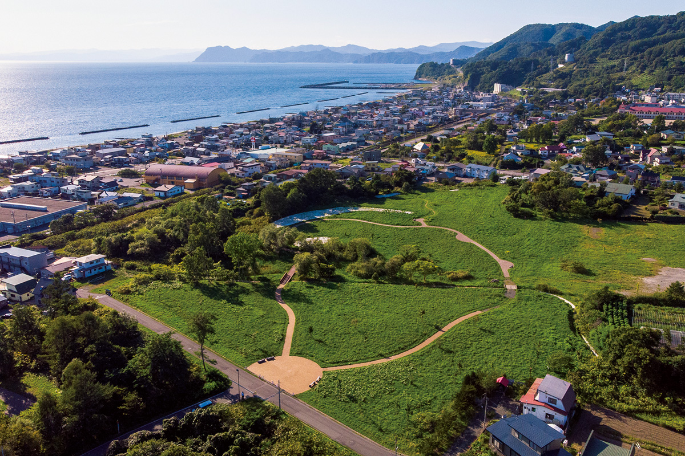
В 2021 году стоянки Хоккайдо и севера Тохоку вошли в список Всемирного наследия ЮНЕСКО как «Памятники эпохи Дзёмон». Пять из них стоят на берегах залива Утиура, и их удобно объехать на машине.
Маршрут
На 15 000 лет назад
Эпоха Дзёмон началась около 15 000 лет назад. Её стоянки на юге Хоккайдо показывают, какой богатой была жизнь древних обитателей острова. Маршрут составил археолог, который участвовал в раскопках одного из крупнейших поселений Дзёмон и входил в экспертный совет по заявке в ЮНЕСКО. Себя он в шутку называет «токийским человеком Дзёмон».
Дорога огибает залив Утиура: от стоянок Какиносима и Офунэ у Хакодатэ на север вдоль берега к Ириэ, Такасаго и Кита-Когане.
Какиносима
Шесть тысяч лет на одном месте
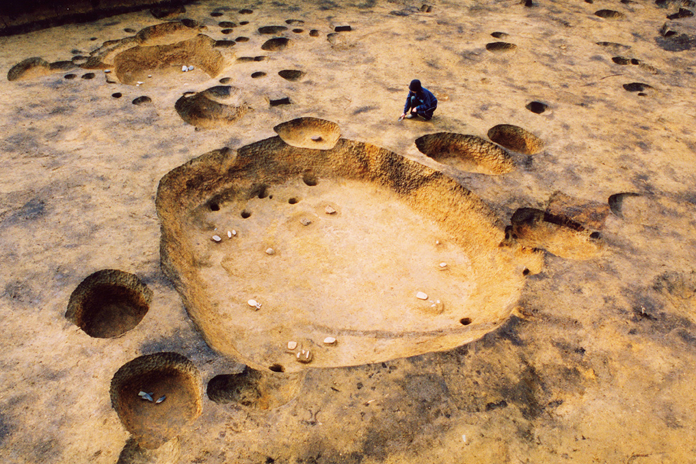
Посёлок Какиносима в черте Хакодатэ, как считают археологи, существовал около 6000 лет. Здесь сохранилась одна из самых больших в Японии насыпей того времени. Кроме посуды и каменных орудий, нашли сосуд с носиком, покрытый лаком, украшения и 17 глиняных табличек с отпечатками стоп. К лету 2021 года на стоянке проложили дорожки и устроили площадку для мастер-классов, чтобы открыть её для всех.
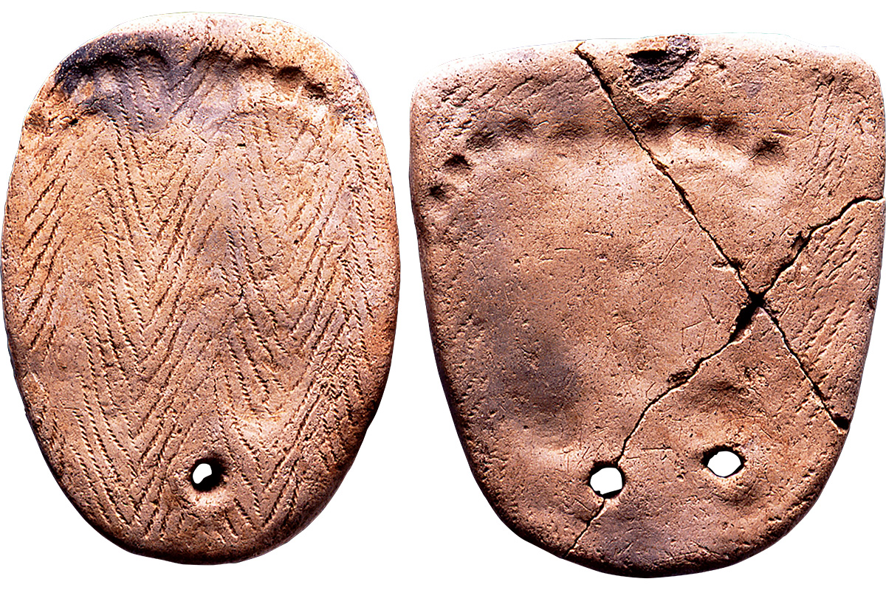
Музей
Центр культуры Дзёмон в Хакодатэ
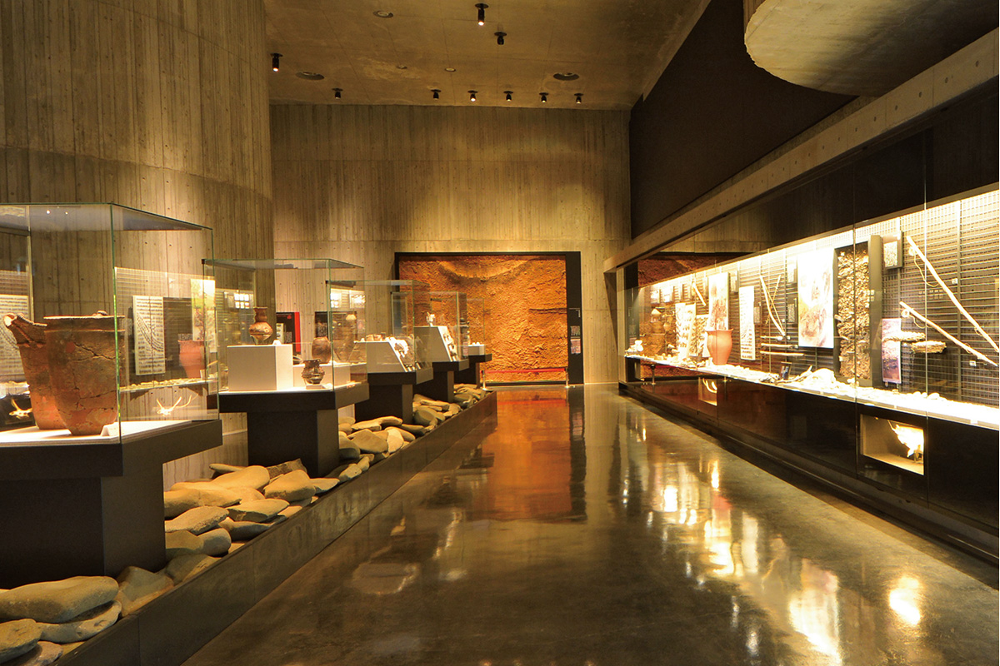
Рядом со стоянкой работает Центр культуры Дзёмон города Хакодатэ. Здесь собраны находки со стоянок на территории города, и главная из них это полая глиняная фигурка догу со стоянки Тёбонайно, национальное сокровище Японии. В том же здании находится придорожная станция «Дзёмон Роман Минами-Каябэ».
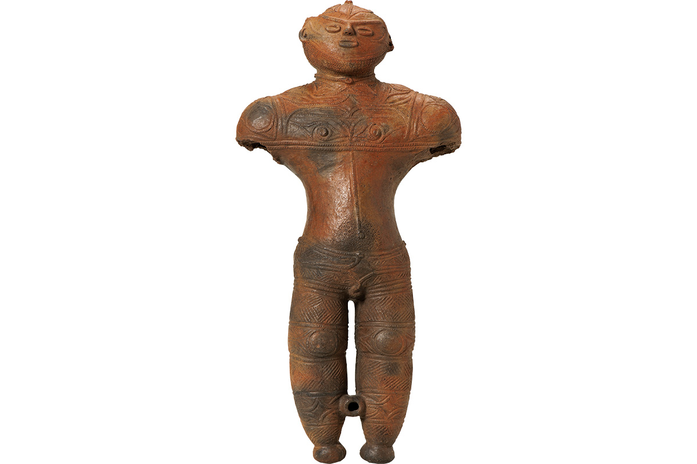
Центр культуры Дзёмон города Хакодатэ
- Адрес
- префектура Хоккайдо, Хакодатэ, Усудзири-тё, 551-1
- Телефон
- +81 138-25-2030
- Часы работы
- 9:00–17:00 (с ноября по март до 16:30)
- Выходные
- понедельник, последняя пятница месяца, новогодние праздники
Офунэ
Холм над океаном
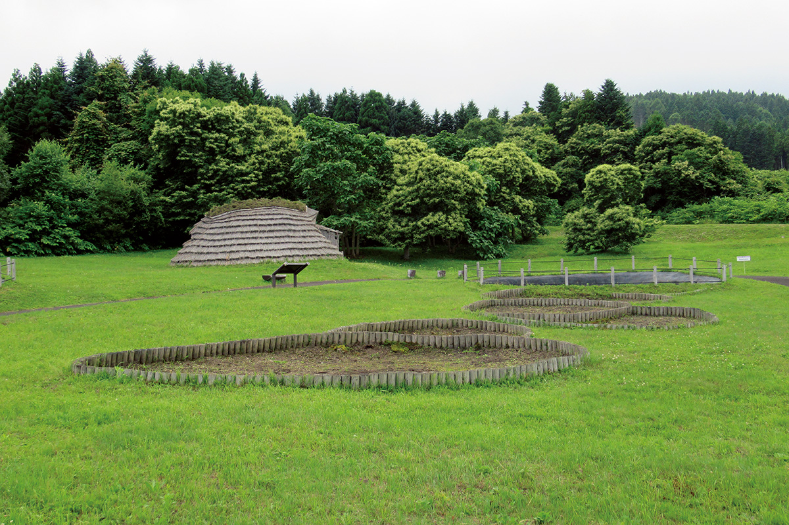
На стоянке Офунэ нашли следы более ста полуземлянок. Посмотрите и вокруг: внизу Тихий океан, позади горы, а по реке рядом осенью идёт на нерест лосось, почти как в эпоху Дзёмон. Посуды на холме нашли огромное количество, и археологи считают, что он долго был местом обрядов.
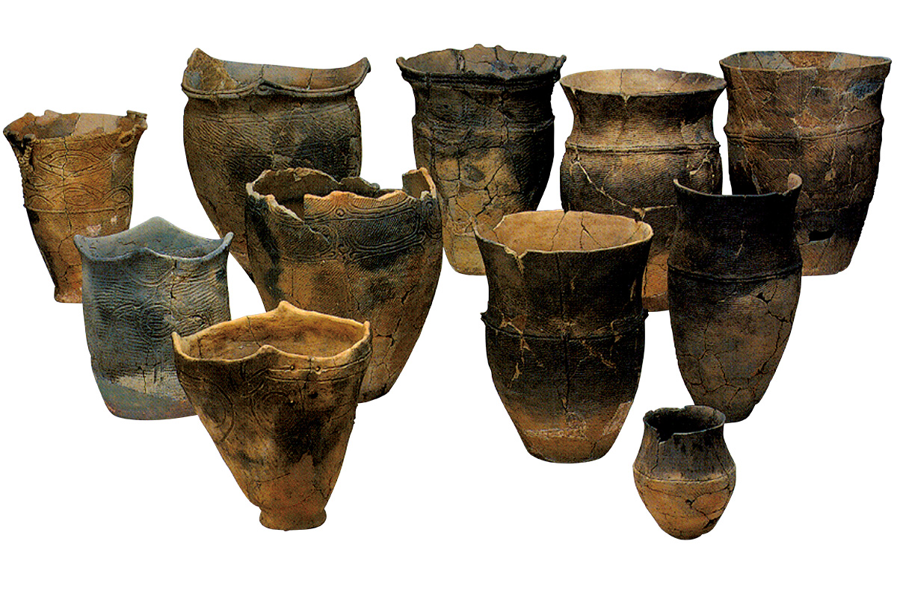
Ириэ и Такасаго
Тоннель сквозь раковинную кучу
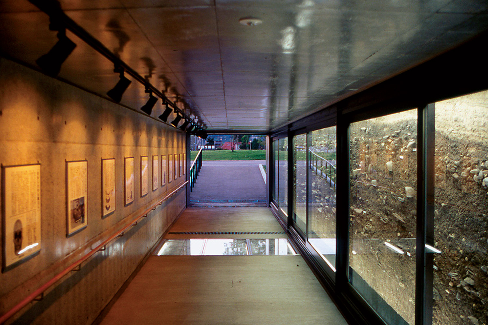
Дальше дорога идёт на север, в посёлок Тояко. В парке Ириэ восстановили полуземлянки, но главное здесь «раковинный тоннель»: срез раковинной кучи шириной около 20 метров сняли целиком и поставили за стекло. В слоях видны черепки, каменные орудия, кости оленей и дельфинов.
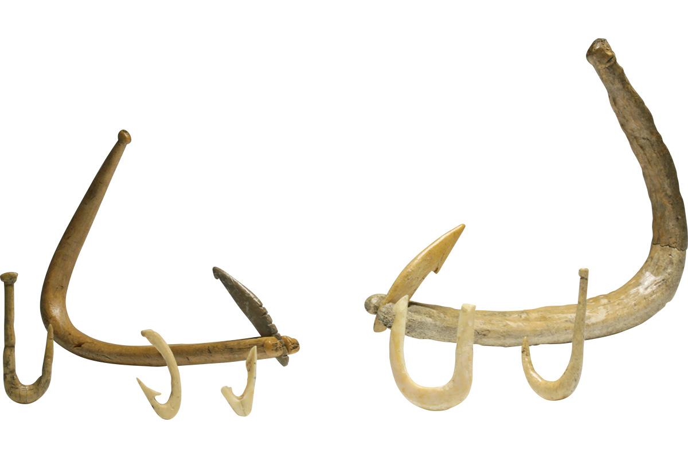
Рядом лежит раковинная куча Такасаго. Парк вокруг неё обустроили по идее «облик эпохи Дзёмон»: здесь раковинная куча, углубления от жилищ, захоронения, восстановленный лес и небольшой биотоп, где наблюдают за растениями и животными.
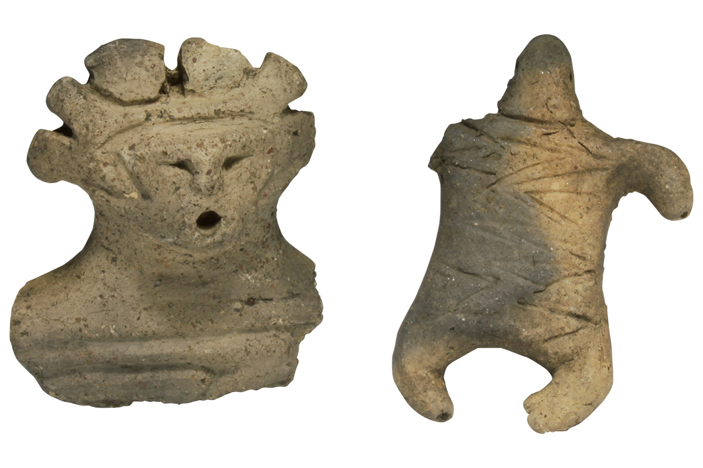
Кита-Когане
Море и горы с одного холма
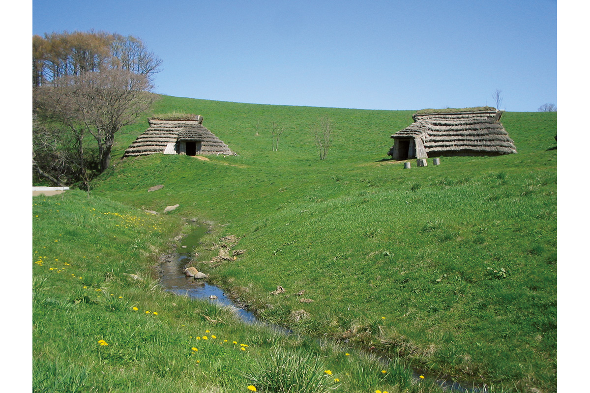
Последняя стоянка маршрута находится в городе Датэ, на холме над заливом. Это посёлок с большой раковинной кучей, сохранённый как исторический парк. Вокруг море и горы, и здесь особенно ясно, какой щедрой была природа, которую почитали люди Дзёмон. В парке можно сделать магатаму, древнюю подвеску в форме запятой, а в августе обычно проходит «Праздник Дзёмон».
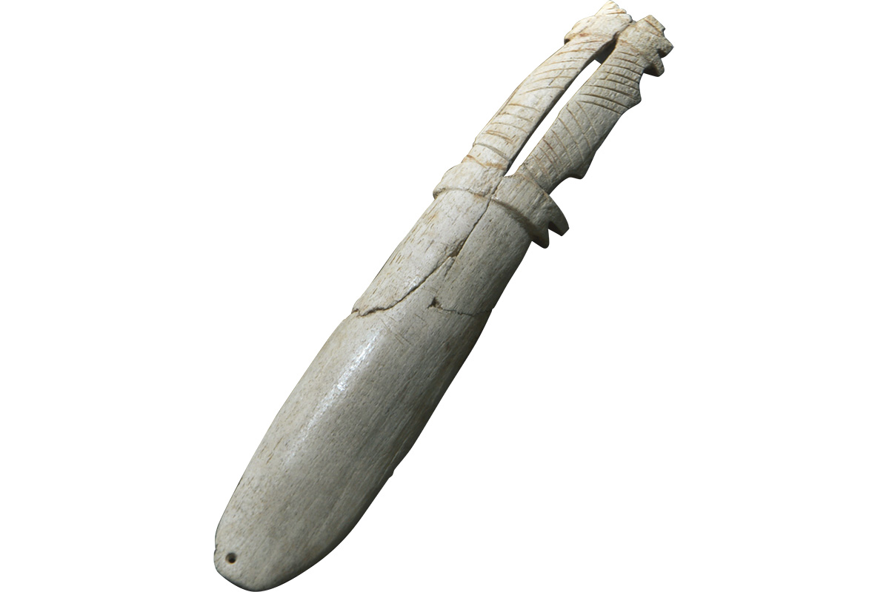
По пути
Куда ещё заехать
Археолог советует две остановки. Первая в Якумо на западном берегу залива: в краеведческом музее рассказывают о культуре Дзёмон и культуре айнов, а при нём работает музей резных деревянных медведей. Таких медведей начали вырезать именно в Якумо.
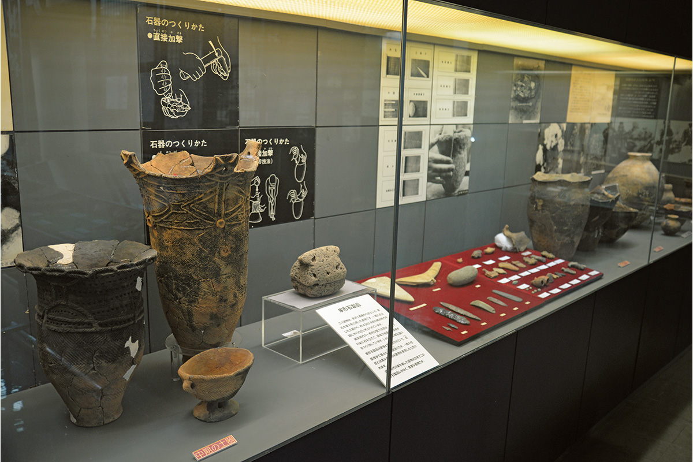
Краеведческий музей и музей резных медведей Якумо
- Адрес
- префектура Хоккайдо, Якумо, Суэхиро-тё, 154
- Телефон
- +81 137-63-3131
- Часы работы
- 9:00–16:30
- Выходные
- понедельник, праздничные дни, новогодние праздники
Вторая остановка это озеро Тоя, кальдера возрастом около 110 000 лет. Обычно с конца апреля до конца октября над ним каждый вечер запускают фейерверк. Где остановиться на берегу, мы рассказали в статье об отеле Hikari no Uta.
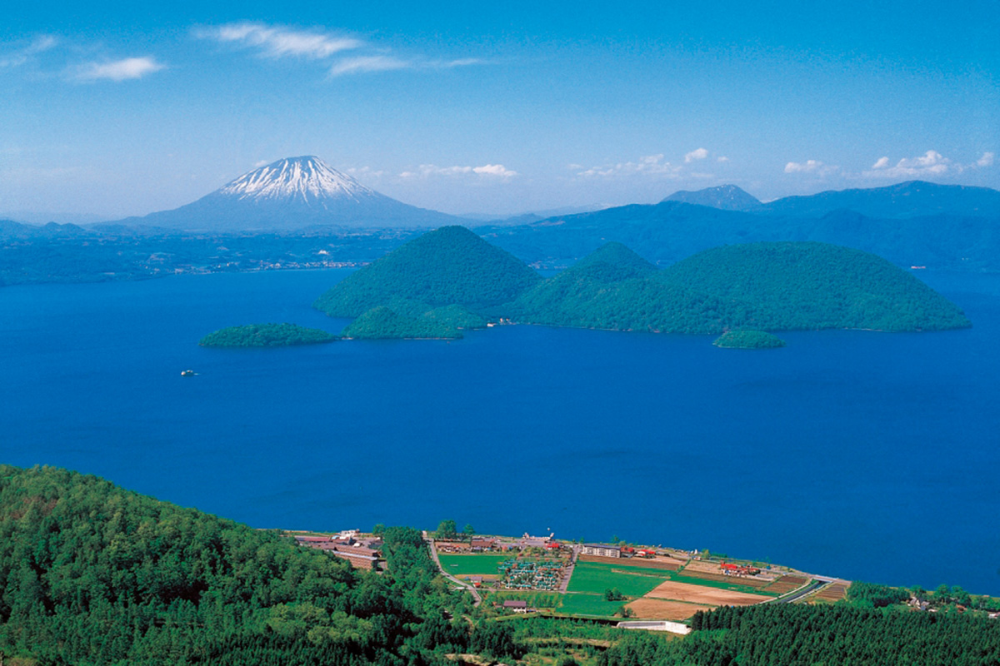
Озеро Тоя
- Адрес
- префектура Хоккайдо, Тояко
- Телефон
- +81 142-75-2446 (туристическая ассоциация онсэна Тояко)
Фото: JOMON ARCHIVES, Совет по образованию города Хакодатэ, посёлок Тояко.